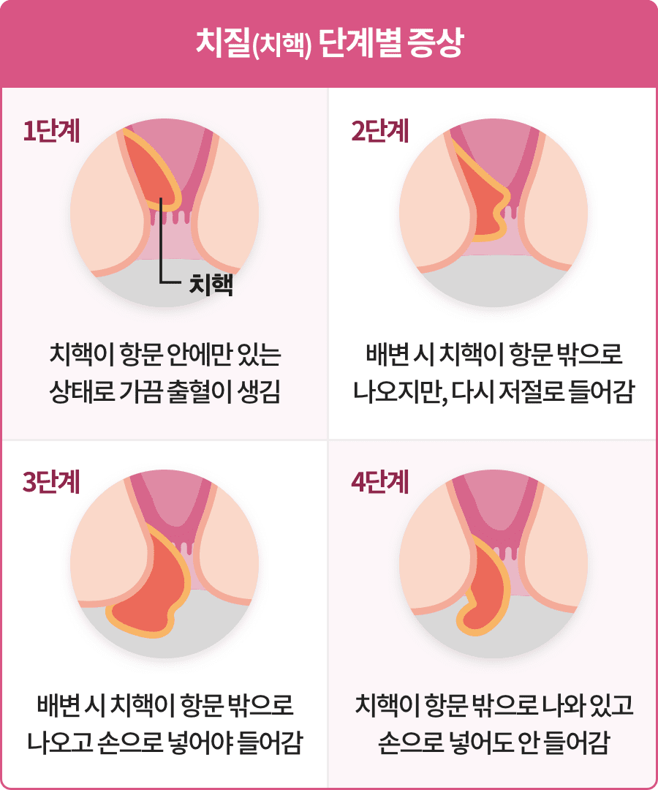
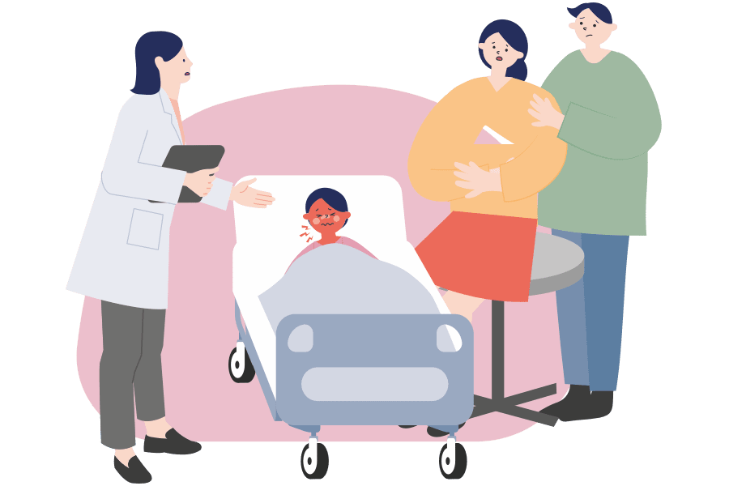
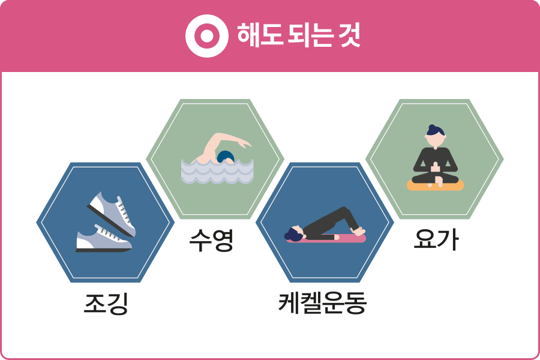
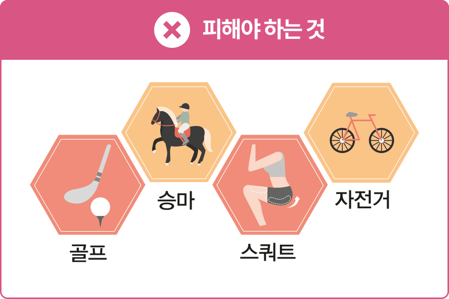
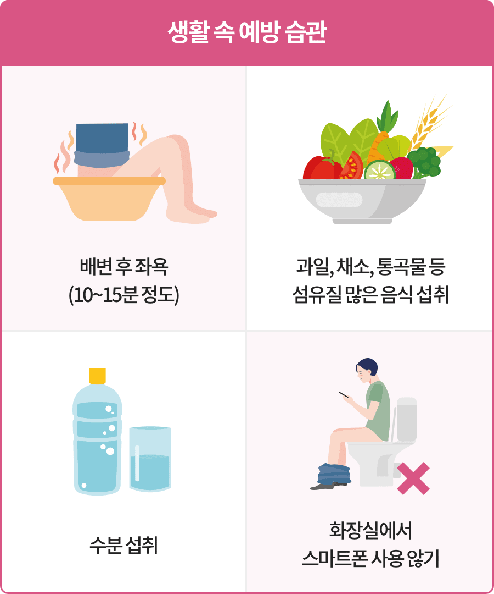

치질은 항문 주변의 혈관이 부풀어 오르고 조직들이 늘어져서 발생하는 질환입니다.
항문질환이기 때문에 쉽게 드러내지 못해 제대로 치료받지 못하는 경우가 많지만, 다빈도 수술 3위를 차지할 만큼 흔한 질병이기도 합니다.
[출처 : 국민건강보험공단 주요수술통계연보, 2021]

치질은 심한 정도에 따라 4단계로 나눠 설명할 수 있습니다.
1~2단계 정도의 증상이라면 좌욕, 배변 습관의 조절과 식이요법, 약물 요법 등의 보존 치료로도 호전이 됩니다.
3단계 이상으로 진행된 경우에는 수술을 고려해야 합니다.

화장실에 스마트폰을 가져가시나요?
이런 습관은 치질에 걸릴 확률을 높입니다.
스마트폰을 보며 시간 가는 줄 모르고 변기에 앉아있다 보면 치질에 걸리기 쉽다고 합니다.
또한 비만하거나 평소 음주를 즐긴다면 악영향을 미칠 수 있습니다.
잦은 변비와 설사는 직장에서 항문까지 염증을 유발해 치질에 걸릴 확률이 높아지기 때문입니다.
오래 서 있거나 물을 자주 마시지 않는 사람도 주의해야 합니다.
치질 환자라면 혈액순환에 도움이 되는 조깅이나 수영 등을 꾸준히 하는 것이 좋습니다.
케겔 운동과 같이 골반저 근육을 강화할 수 있는 운동이나 요가도 도움이 됩니다.
치질 환자가 피해야 하는 운동도 있습니다.
골프, 볼링 등 순간적으로 힘을 집중시키는 운동은 복압이 커지므로 치질이 생기기 쉽습니다.
아랫배에 힘을 많이 주는 자전거 타기나 승마 같은 운동을 피해야 하며, 스쿼트나 역도처럼 무거운 것을 드는 운동도 치질을 악화시킬 수 있기 때문에 피하는 것이 좋습니다.


항상 항문을 청결하게 유지하고 평소 물을 많이 마시고 섬유질, 유산균을 섭취하는 식습관을 통해 변비를 예방하는 것이 좋습니다.
드러내기 어려운 질환이라 증상이 있어도 병원 방문을 꺼리는 경우가 많습니다.
치질이라고 반드시 수술이 필요하지는 않습니다.
막연한 두려움을 내려놓고 항문외과를 방문하여 전문의의 상담을 받아보는 것이 중요합니다.
